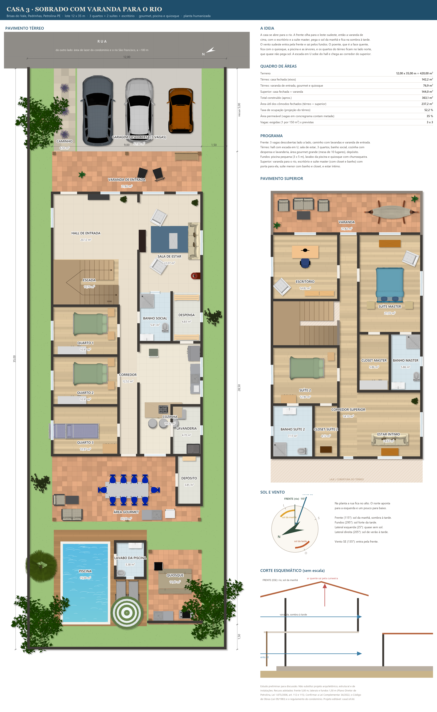
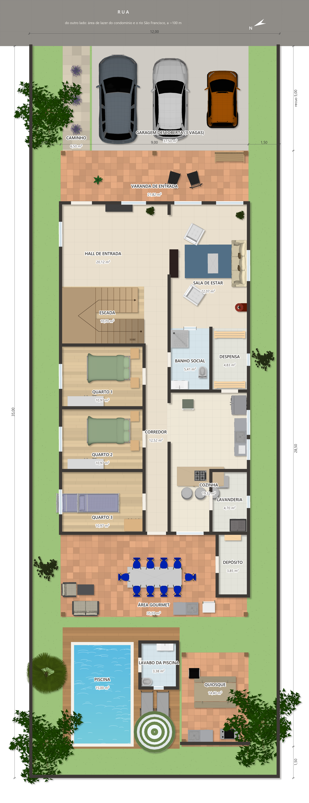
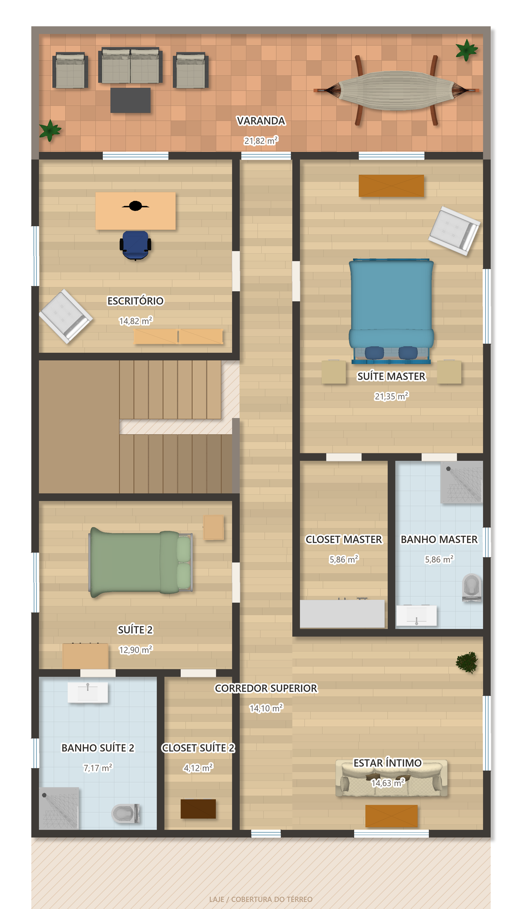
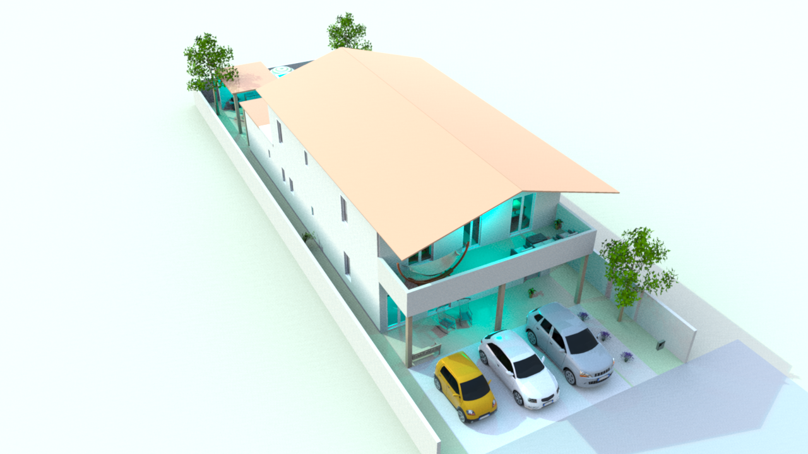
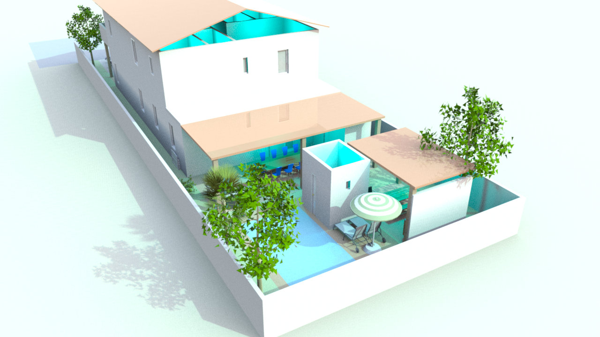
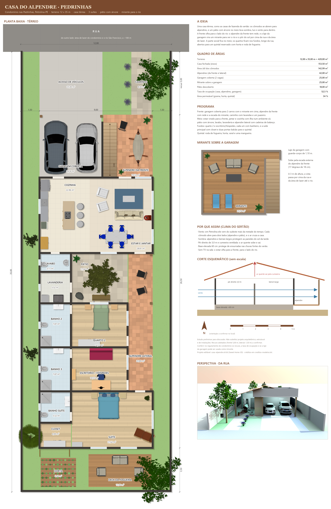
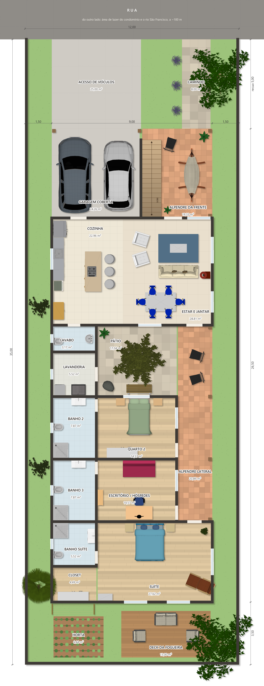
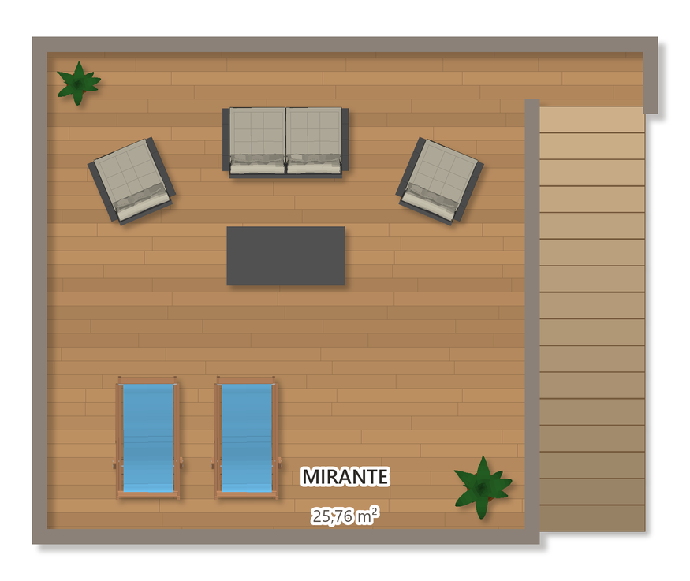
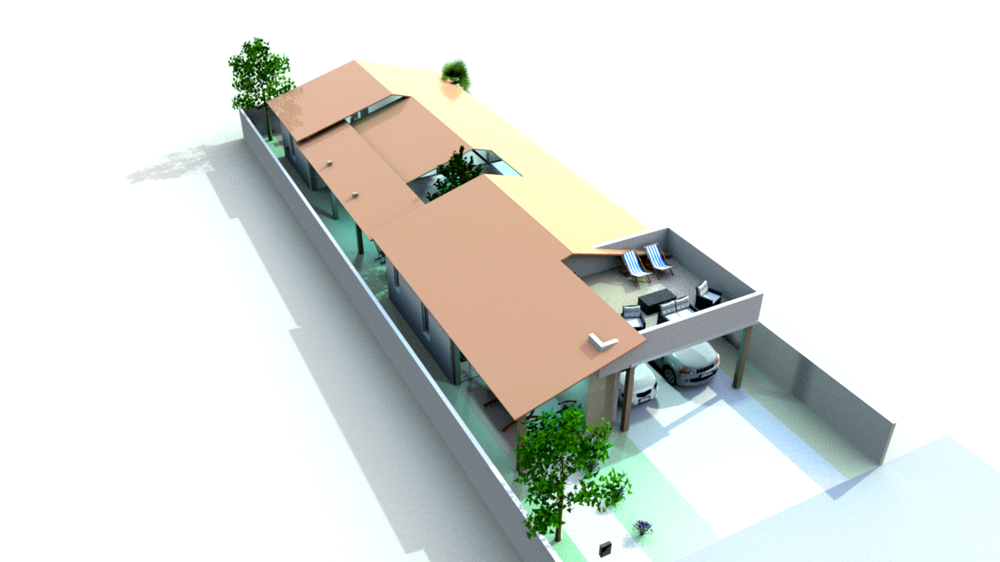
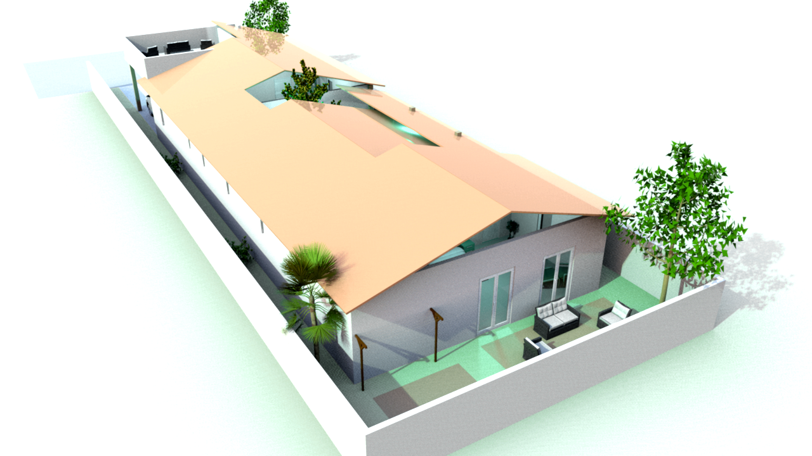

Uma casa que respira, sombreia e recebe.
As duas propostas preservam a frente voltada a ESE (115°), para a área de lazer do condomínio e o rio São Francisco. A frente recebe o vento predominante de SE; os fundos, a oeste-noroeste, recebem proteção solar com beirais, vegetação e áreas de serviço.
A piscina é deliberadamente compacta: o protagonismo do lazer está no conjunto — gourmet, sombra, alpendres, deck, quiosque e jardim — e não apenas no espelho d’água.
Casa Mirante do Vale
Mais área construída verticalizada, varanda superior para o rio e lazer protegido nos fundos.





Por que funciona
Concentra os quartos do térreo em uma faixa mais protegida e usa o pavimento superior para capturar a vista. A varanda funciona como filtro solar e extensão da suíte master e do escritório.
Perfil
✓ Melhor vista e separação entre íntimo/social
✓ Gourmet integrado à cozinha
✓ Piscina pequena com quiosque
✓ Escada em U
Casa do Alpendre
Uma casa de campo horizontal, fresca e afetiva, organizada por alpendres, pátio e jardim.





Por que funciona
O alpendre lateral cria uma promenade sombreada e costura os ambientes. O pátio central com árvore traz luz filtrada, ventilação cruzada e a atmosfera de casa de fazenda.
Perfil
✓ Vida toda no térreo
✓ Grande continuidade entre casa e jardim
✓ Mirante para a paisagem
✓ Piscina compacta com quintal generoso
Critérios que guiaram as duas propostas
| Tema | Decisão | Status |
|---|---|---|
| Orientação | Frente ESE 115°, rua no alto da planta; norte indicado conforme o briefing. | Atende |
| Recuos | 5,00 m frontal; 1,50 m laterais e fundos. | Adotado |
| Vento | Aberturas na frente e nos fundos para ventilação cruzada. | Atende em princípio |
| Sol da tarde | Fundos tratados com cobertura, árvores, beirais e áreas de apoio. | Atende em princípio |
| Permeabilidade | Jardins laterais e quintal preservados; meta mínima de 30%. | A conferir no executivo |
| Legal | Plano Diretor 2022, Anexo II, condomínio e Código de Obras devem ser confirmados na Prefeitura. | Estudo preliminar |
As imagens são estudos preliminares. Antes da aprovação: conferir levantamento topográfico, sondagem, instalações, estrutura, acessibilidade NBR 9050, regras do condomínio e os parâmetros vigentes de Petrolina.